Hardware
What is Hardware
A computer is an electronic device that is programmed to store and display information. The physical components that run a computer are called computer hardware. As such, it is the backbone of the computer, directly affecting its performance. Hardware primarily targets the machine, Berger, A. S. (2005).
Computer Peripherals
External peripherals are computer parts that operate outside the computer. The common external
peripherals in a computer are: monitors, printers, keyboards, scanners, and camera, Wilson, K. (2022).
Peripheral hardware is connected to a computer.
Software
What is Software
Software refers to a set of instructions and algorithms that tells the
device what to do. It enables user interactivity and alongside
hardware is what keeps computers running today. It is used in our
daily activities. Software leans more to programming languages
and its concepts, Blum, E. K. (2011).
Types of Software
Software can be split into two different types, namely; application and system software. System software is also commonly called an “operating system”. Operating systems are the basic component of a computer and are what make computer hardware operate. Application software refers to any software that runs to perform a specific task, that task can be video editing, word processing, browsers, etc, James, K. L. (2013).
Motherboards
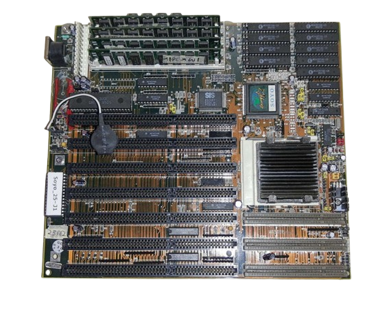
AT Motherboard
AT motherboards spanned all the way back in 1980. There were specific computer sizes made for these motherboards due to their sizes. In it lies a big power connector with several slots in the bottom, and the processor was located in the top right corner. Memory was placed beside the processor. As of today, AT motherboards are no longer used and are replaced by ATX motherboards, GeeksforGeeks, (2024).
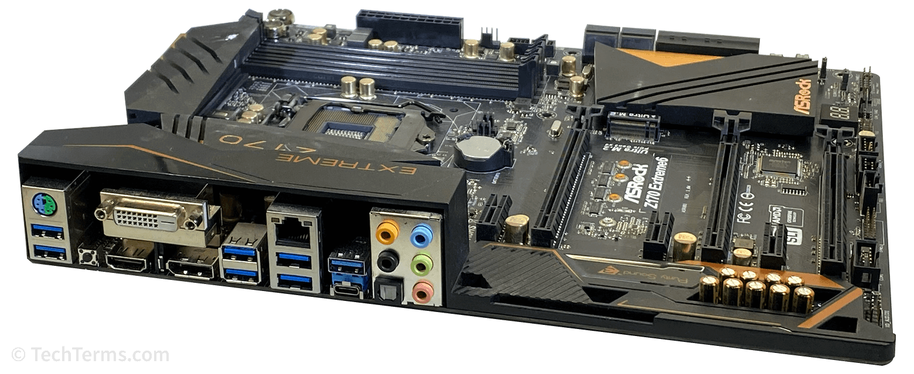
ATX Motherboard
ATX motherboards are a modernised version of AT motherboards and are commonly used in computers today. Compared to its predecessor, it has better power management, newer processors, and faster memory, GeeksforGeeks, (2024).
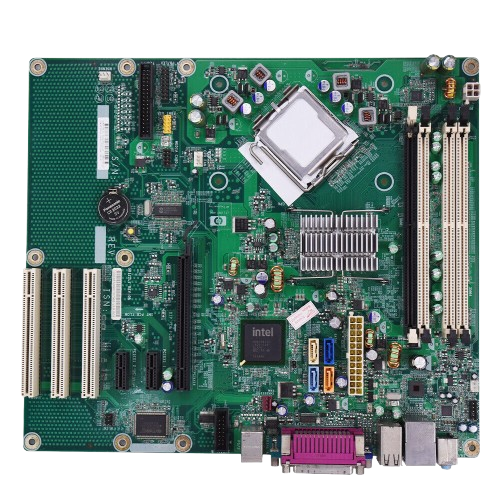
BTX Motherboard
A short lived motherboard by Intel that switched its CPU and RAM slots, as well as relocating ports and headers for improved heat dissipation. While it had a short lifespan, its principles of thermal design are still used in newer ATX designs, Hasonss, (2024).
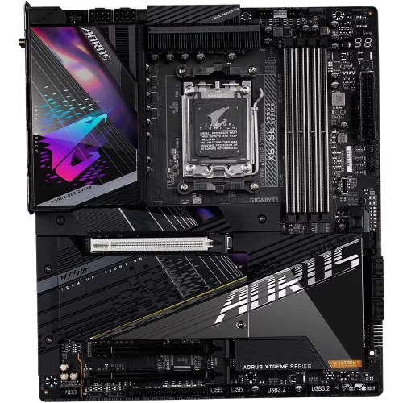
Extended ATX Motherboard
These motherboards support twin CPU configuration and hold up to 8 RAM slots. They also have more PCIe and PCI slots which can be used for adding more PCI cards, Hasonss, (2024).
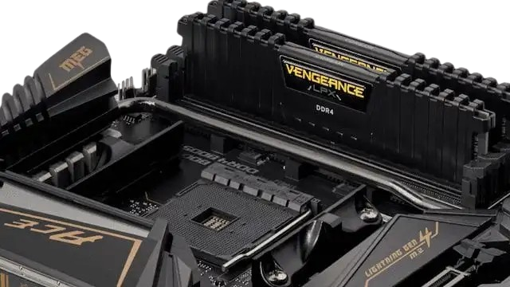
LPX Motherboard
In this motherboard, the input and output ports are moved to the rear of the motherboard, as well as having a riser card which can be used to have additional slots. These low profile motherboards are used on slim PC’s with limited space, Hasonss, (2024)
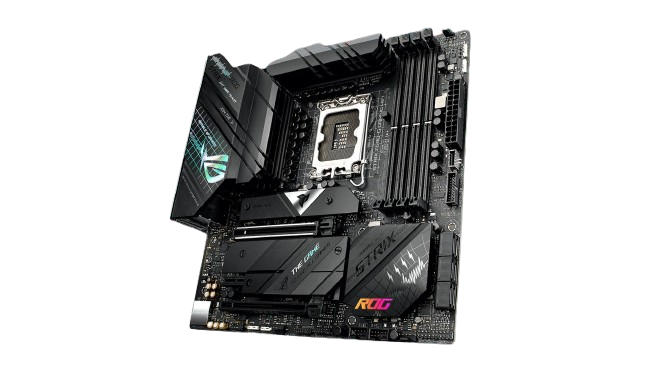
Micro-ATX Motherboard
A smaller alternative to ATX motherboards. Compared to the ATX motherboard, its size is only 244 x 244 mm, while still keeping the functionalities of a normal ATX motherboard, Hasonss, (2024).
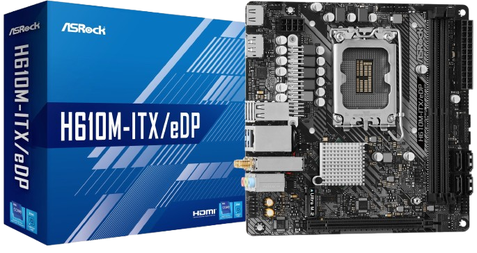
Mini-iTX Motherboard
A compact motherboard which only sizes at 170 x 170 mm. These motherboards are mainly used in compact, high performance PC’s. Due to its small size, it can only fit two RAM slots and one PCI slot, Hasonss, (2024).
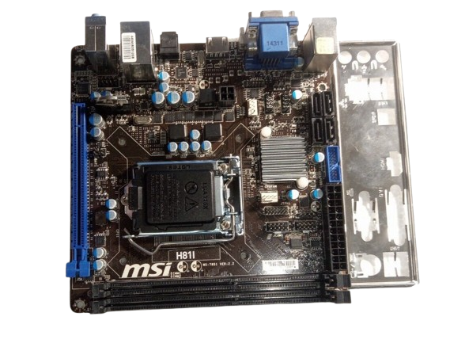
Mini-ATX Motherboard
Mini-ATX motherboards are smaller than Mini-ITX motherboards, usually sized at 105 x 105 mm. Similar to Mini-ITX motherboards, they are used in small computers and generate less heat, Computer Hope, (2024).
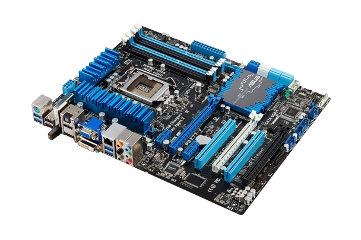
Pico-BTX Motherboard
Pico-BTX motherboards are a compact version of BTX motherboards and are only 151 x 151 mm. Due to its cramped PCB area, it can be susceptible to high thermal indexes, Hasonss, (2024).
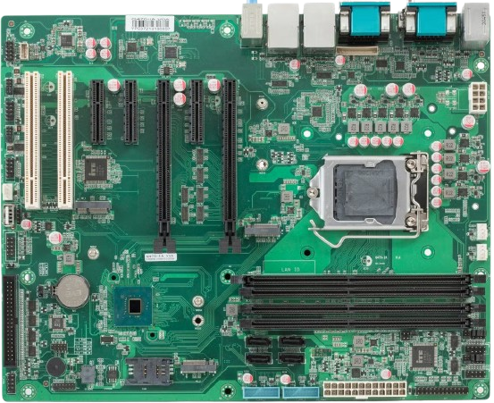
Standard ATX-Motherboard
Standard ATX-motherboards were an improvised version of AT-motherboards created by Intel. Compared to the older AT-motherboard design, ATX-motherboards are much more compact as well as being able to interchange its components, Basumallik, C. (2023).
Comparative Table
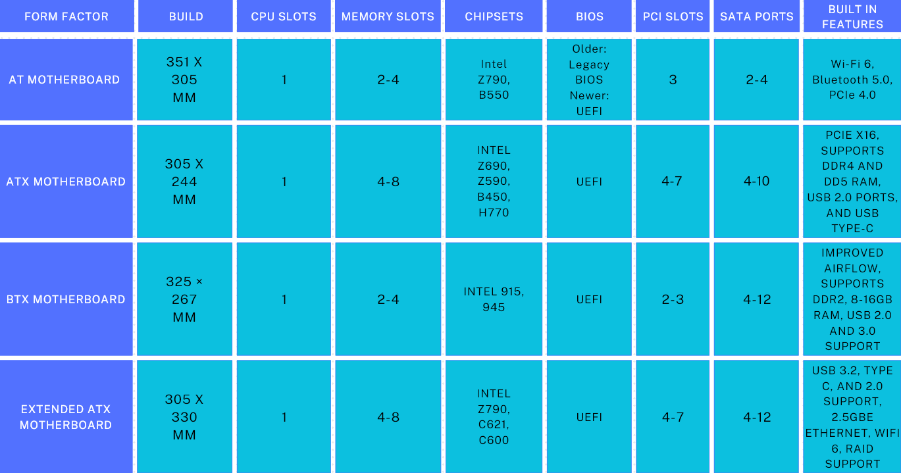
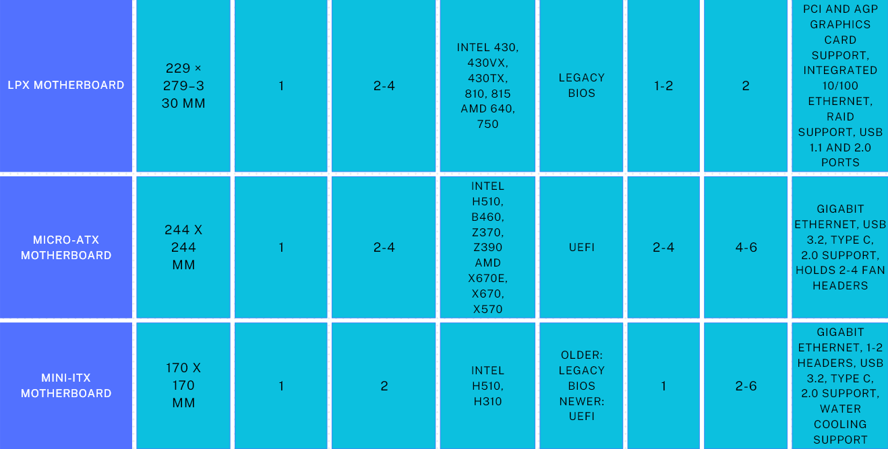
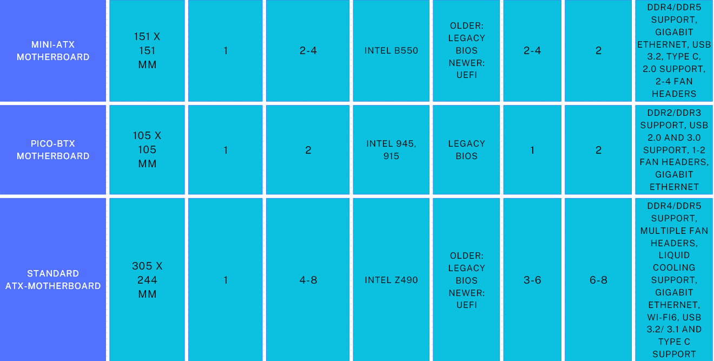
Types of Computers
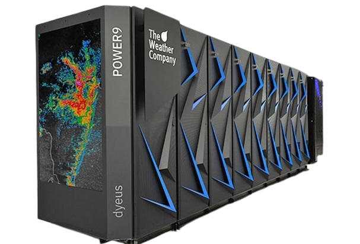
Supercomputers
Supercomputers are types of computers built for high performance and are costly to make. Common traits of a supercomputer include: high computing speeds, precision of stored numbers, as well as having a fast main and secondary memory, Rajaraman, V., (1999).
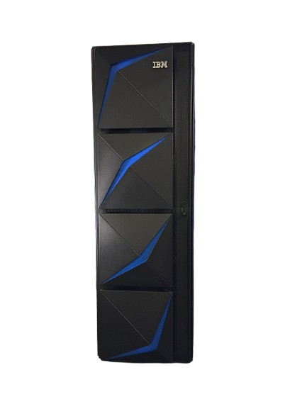
Mainframe Computers:
Mainframe computers are large computers that process data at high speeds and are built for processing large amounts of data. The main advantages of mainframe computers are its performance, flexibility, reliability, serviceability, cost effectiveness, modernization, security and encryption, Tauli, T., (2022).
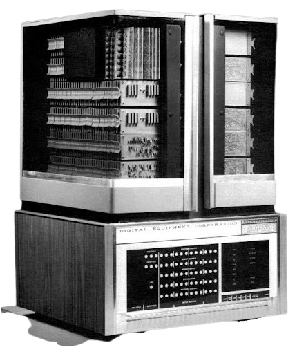
Mini Computers
A mini computer consists of three main components: the CPU, memory unit, and input/output units. Minicomputers are commonly used for commercial use due to their low cost compared to mainframe computers, to perform simple organisational tasks, and oftentimes used in scientific applications, Sanderson, P., (2014).
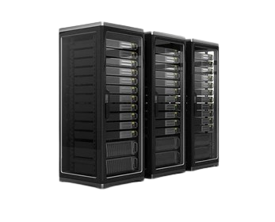
Server
Servers are machines that store, manage, and process data in a network. It provides networking units with resources to perform specific tasks such as displaying a web page or sending/receiving emails. When a user enters a website URL, servers respond with the requested information, Kanade, V., (2023)
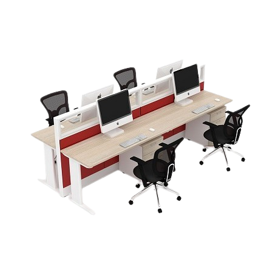
Workstations
Workstations are computers that are used in workplaces. A workstation consists of an individual computer used by one user to do work. These computers can also be connected to a larger network, ComputerHope., (2022).
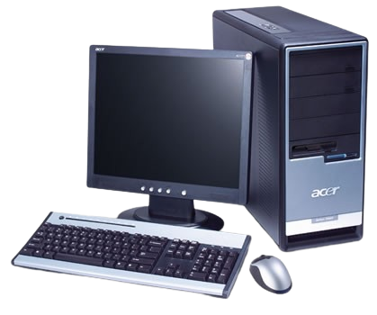
Micro Computer
Microcomputers, or commonly known as personal computers, are small computers designated for one user at a time. The portability and low cost of microcomputers made it usable in places such as developed countries, where mainframes and minicomputers were only used in government areas, Lawless, W., (2019).
Comparative Table
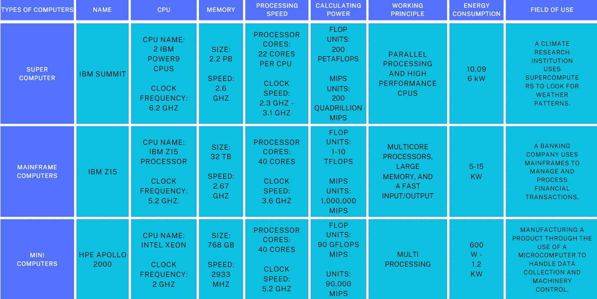
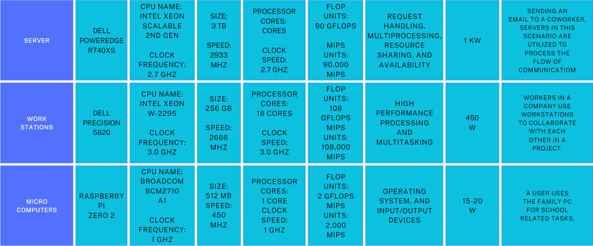